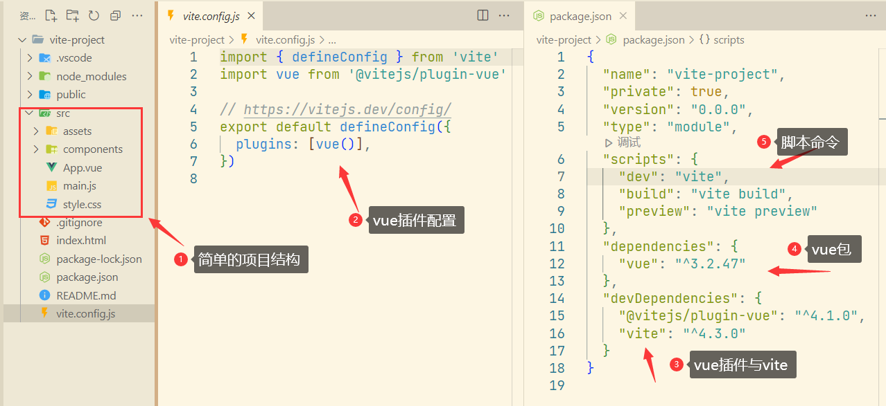

Vue快速入门
一、为什么需要 Vue 框架
首先，仅凭HTML5+CSS3+JS+HTTP 协议+Ajax，已经可以与后端开发配合，开发一个完整 Web 应用了
那为什么我们还需要学习 Vue 框架呢 ？要解决这个疑问，我们就得先从 Web 前端技术的发展历程讲起
Web 前端技术的发展
关于 Web 前端技术的发展，我们从 Web 应用开发的三个阶段来展开学习：
- 前后端不分离
- 前后端分离
- 前端工程化
前后端不分离
- 早期（1995 年）以前，Web 应用主要是静态网页的浏览，技术主要以 HTML+CSS 为主
- 在 1995 年，网景公司的工程师 Brendan Eich（布兰登·艾奇） 用 10 天时间设计了 JavaScript，随后的网页中开始诞生了动画特效。但是，Web 的应用主要还是静态网页的浏览，只是比之前多了些特效罢了。
- 再之后，更多的应用需要根据用户的请求动态生成页面信息，复杂一点的还需要从数据库中查询数据，经过一定的运算，生成一个 HTML 页面返回给用户。
- 在 2004 年以前，前端工作主要交由美工来负责。美工利用 HTML+CSS+JS 来编写静态网页，然后后端开发人员利用服务端技术从服务器的数据库中把数据查出来，绑定到 HTML 页面中，实现根据用户的请求动态生成 HTML 页面信息。这个时候，浏览器拿到的是服务端渲染好的 HTML 页面，然后展示在浏览器端
前后端不分离，带来的问题
- HTML 页面由服务端渲染，每一次数据的交互都要全局刷新，影响用户体验
- 前后端串行开发，开发时间相对较长
- 前后端代码揉在一起，开发维护成本高
前后端分离
- 在 2004，Google 发布了 Gmail（一款电子邮件应用），其利用的就是 Ajax 技术，用户可以在不刷新页面的情况下进行复杂的交互，之后，Ajax 逐渐成为网页开发的技术标准，也不断地被应用于各种网站。
- 2005 年，
XMLHttpRequest对象发请求的技术正式取名为AJAX - Ajax 这个技术让我们可以异步的获取数据并且刷新页面，从此前端不再受限于后端的模板，这也宣告了 Web2.0 时代正式到来。至此，前端工程师也正式作为一个独立工种出现。
- 在之后的一段时间里，前端的工作主要在于利用
HTML+CSS+Jquery+JS+BootStrap等开发网页，同时利用Ajax向后端发送请求，拿到后端返回的(XML 或 JSON)等格式的数据做渲染，在渲染时，要做大量的DOM操作。而后端只需要专注于业务逻辑的处理，返回（XML 或 JSON）格式的数据 - 同时前后端可以并行开发，开发的时间成本降低了。同时前后端分离，维护成本降低，当布局需要变动，内容不变时，只需要变动前端布局就好，后端就可以不动
前后端分离，带来的新问题
- 前端开发在数据渲染时，需要大量的 DOM 操作，非常繁琐和耗时。所以那个时候 JQuery 非常流行，虽然他可以帮助我们简化 DOM 的操作，但依然还是需要大量操作 DOM
- 因为数据都是在浏览器端通过 Ajax 请求获取的，然后渲染在页面中。所以爬虫在爬取页面内容时，没有什么有用的实质性内容可获取，页面只有一些简单的 HTML 结构，所以对 SEO 优化非常不友好
前端工程化
- 在 2009 年
AngularJS和Node.js的诞生，也宣告前端工程化时代的到来。AngularJS的诞生，引领了前端 MVVM 模式的潮流。Node.js的诞生，让前端有了入侵后端的能力，也加速了前端工程化的诞生。
- 2013 年
Vue框架诞生了。 Vue、Angular、React这类前端框架，可以帮助我们解决在前端数据渲染时，不需要再关注于 DOM 的操作，而只需要关注于业务逻辑的处理。- Vue 等前端框架让前端工程师从大量的 DOM 操作中解放出来，但依然对 SEO 不友好，因为他本质也是通过 Ajax 请求，向后台拿到数据，在前端渲染。
- 不过，现在 Vue 提供了
@vue/server-renderer插件，可以在服务器端解析 Vue 的组件，直接把渲染结果返回给浏览器。这样 SEO 不友好的问题也就解决了
前端框架介绍
什么是框架
- 如果，你想要有一个自己的房子，按正常流程，你得自己从 0 开始一点一点的修建，至少需要一年的时间，但这样太费时了。如果有人把房子的框架都搭好了，（比如：开房商提供的毛坯房），你只需要按自己喜欢的风格来装修就好，这样是不是 2-3 个月就能入住了，大大的缩减了建房子的时间。
- 上面例子中毛坯房相比装修好的房子，毛坯房就是房子的框架，有了毛坯房，就不需要再从 0 开始搭建房子了，直接进入装修环节就好，这样省时有省力。
框架帮我们做了什么
- 从上面的例子中，我们知道，如果直接选用毛坯房，那我们就不需要再从 0 开始修建房子了，直接装修就好。所以框架帮我们把原来属于我们自己要做的那一部分工作给做掉了，我们只需要在这个基础之上，做其它的后续工作就可以。
- 同理，前端框架就是帮开发人员把原本属于开发人员的一部分工作给做掉了，开发人员只需要在这个基础之上，做其它工作。
前端流行框架有那些
- 目前前端流行的框架主要有
Vue、React、Angular。这些框架的目标都是为了帮助开发者高效地开发 Web 应用，只不过走的路线略显不同React注重数据不可变、虚拟 DOM 和运行时。Angular则在抽象这个维度又走向一个极致，生来就是为了复杂项目Vue相比前两种框架要简单多了，简单到大部分前端开发者都能学得会。Vue在每个维度之间，做了非常好的权衡和取舍，算是一个非常中庸且优雅的框架，兼顾响应式、虚拟 DOM、运行时和编译优化
Vue 框架帮我们做了什么
作为前端开发人员，如果你想配合后端，开发出一个完整的 Web 网站或应用等。
- 在没有应用 Vue 框架前，你需要利用
HTML+CSS+JS来开发HTML网页，同时利用Ajax请求向后端获取JSON数据，然后利用JS操作DOM将数据渲染到HTML中。 - 如果有了 Vue 框架，就不再需要利用 JS 操作 DOM 将数据渲染到 HTML 中，因为 Vue 框架帮你做了这部分工作
- Vue 框架本质就是帮我们把 JS 操作 DOM 的这一套逻辑业务代码写好了，我们只需在这个基础做后续开发。
MVVM 模式
前端框架几乎都是采用典型的 MVVM 设计模型，那 Vue 也不例外。MVVM 是
Model-View-ViewModel的简写。
| MVVM | 模式 | 说明 |
|---|---|---|
| Model 模型 | 用于封装应用的业务逻辑和数据。在 Vue 框架中书写在<script>标签中的代码 |
|
| View 视图 | 用于封装 UI 和 UI 逻辑，也就是我们常写的 HTML 与 CSS 相关的代码。就好比上面的 HTML 模块 | |
| ViewModel 视图模型 | 他主要是将 Model 与 View 结合到一起，封装了将他们结合到一起的底层逻辑；Vue 框架负责的就是 VM 的工作，通过 Vue 可以将视图和模型相关联，省去了开发人员手动操作 DOM 的工作 |
- 我们可以把上面的
VM看作Vue框架，那Vue负责 VM（视图模型）的工作，通过Vue可以将视图和模型相关联。 - 当
Model模型（JS 数据）发生变化时，会通知ViewModel，ViewModel会控制视图自动更新 - 当
View视图（如：表单数据）发生变化时，也会通知ViewModel，ViewModel会控制Model自动更新数据。- 以上工作模式，也是
Vue框架的一个核心特点：响应式
- 以上工作模式，也是
二、Vue 简介
什么是 Vue
- Vue 是一款用于构建用户界面的 JavaScript 框架。它基于标准 HTML、CSS 和 JavaScript 构建，并提供了一套声明式的、组件化的编程模型，帮助你高效地开发用户界面。无论是简单还是复杂的界面，Vue 都可以胜任。
- 用户界面：是指系统和用户之间进行交互和信息交换的媒介。比如：电脑屏幕，手机等电子设备屏幕。这里你可以理解为，客户端界面要呈现的内容，可以用 Vue 来构建。
1. 声明式与命令式
要了解什么是声明式，最好与命令式结合在一起来学习，这样能帮助我们更好的理解声明式。
- 命令式：更关注过程
- 声明式：更关注结果
我们先用一个生活中的例子，来帮助我们理解。比如，你想要你男朋友帮你倒杯水
如果用命令式：
- 你要对他说：“先到餐桌 -> 拿起我的水杯 -> 转身 -> 向前走 -> 把杯子放在饮水机下 -> 按下开关 -> 端水 -> 走到我面前”，然后才能喝到水。
如果用声明式：
- 你只需要对他说：“我口渴了 -> 想喝水”，他就会把水端到你面前，你就能喝到水了。
2. 命令式框架与声明式框架
视图层框架通常分为命令式和声明式，JQuery 就是典型的命令式框架，Vue 就是典型的声明式框架
- 命令式框架（JQuery 框架）
<!--引入Jquery框架(插件)-->
<script src="https://cdn.bootcdn.net/ajax/libs/jquery/3.6.4/jquery.min.js"></script>
<div id="app">
<div class="box"></div>
</div>
<!--JQuery代码-->
<script>
$(".box").on("click", function () {
$(this).text("Hello");
});
</script>
<!--
上面代码，相当于在执行以下几个步骤
1、获取.box元素
2、给.box元素绑定click事件
3、当click事件触发后，为.box元素添加内容为"hello"
-->
- 命令式编程(原生 JS 代码)
// 1、获取.box元素
const box = document.querySelector(".box");
// 2、.box绑定click事件
box.onclick = function () {
// 3、将box的内容更新为Hello
this.innerText = "Hello";
};
通过上面
JQuery和 原生JS代码 代码可以看到，代码描述的是实现最终效果要经过的具体步骤，更关注“做事的过程”，当然这更符合我们的逻辑，只是代码写起来比较麻烦。
- 声明式框架 （采用 Vue）
<!---引入Vue框架-->
<script src="https://unpkg.com/vue@3/dist/vue.global.js"></script>
<!--声明式-->
<div id="app">
<div @click="show" class="box">{{message}}</div>
</div>
<!--Vue代码-->
<script>
const { createApp } = Vue;
createApp({
data() {
return {
message: "",
};
},
methods: {
show() {
this.message = "Hello";
},
},
}).mount("#app");
</script>
以上代码，重点关注
HTML部分代码，这就是 Vue 帮我们实现以上功能的方式。可以看到，我们提供的是一个“结果”。至于具体的实现过程，我们不需要关注，Vue.js 会帮我们完成。换句话说，Vue.js 帮我们封装了整个 JS 操作 DOM 的过程，因此，我们可以猜想，Vue.js 的内部实现一定是命令式的，而暴露给用户的却是声明式的
3. 组件化
组件允许我们将
UI划分为独立的、可重用的部分，并且可以对每个部分进行单独的思考。
在实际应用中，组件常常被组织成层层嵌套的树状结构

上图左侧的网页，由一个根组件
Root开始，在根组件Root中包含Header、Main、Aside子组件，在Main和Aside组件中，又可以放很多的子组件。
在 Vue 中：
- 组件本质就是一组 DOM 的封装，用来显示具体功能的 UI 界面。
- 一个完整的 Vue 组件包含
HTML、CSS、JS三部分。当我们需要在多个页面实现相同的功能的 UI 时，就可以把这部分功能的(CSS、HTML、JS)抽离出去，做成一个单独的组件，然后实现复用。
注：区分模块化与组件化
- 模块化强调的是把一个大的 JS 文件拆分成许多具有独立功能的小的 JS 文件，从而实现代码复用
- 组件化强调的把一个大的 UI 界面，拆分成许多具有独立功能的小 UI，从而实现 UI 界面的复用
4. 渐进式
在 Vue 的官网，开篇就提到，Vue 是一个
Javascript渐进式框架，那什么是渐进式呢？
所谓渐进式，就是把框架进行分层设计，每层都是可选的，不同层可以灵活地替换为其他的方案。
Vue 渐进式框架分层结构下如图：

Vue 最核心的部分就是他的声明式渲染，向外是组件系统，在这个基础上再加入路由系统和状态管理，最外层是构建系统。
| 组合 | 说明 | |
|---|---|---|
| 组合一 | 声明式渲染 | 当我们开发的页面很简单，可以把Vue.js作为一个JS库来使用，只使用他的声明式渲染来帮我们轻松地操作DOM，实现数据变化的自动视图渲染 |
| 组合二 | 声明式渲染+组件系统 | 当我们开发的页面较复杂，想要把界面元素组件化，就可以在组合一的基础上加入Vue的组件系统，将界面的部分功能开发成一个组件，采用分而治之的策略，而且还可以实现功能的复用。 |
| 组合三 | 声明式渲染+组件系统+路由系统 | 如果想要将前端做成单页面应用程序，可以在组合二的基础上加入Vue的路由系统VueRouter,实现单页面应用。 |
| 组合四 | 声明式渲染+组件系统+路由系统+状态管理 | 如果我们的项目较复杂，应用中有很多数据需要在多个组件间共享，就可以在组合二或三的基础上引入Vuex或Pinia统一对状态（数据）进行管理 |
| 组合五 | 声明式渲染+组件系统+路由系统+状态管理+构建系统 | 如果你不想手动的从0开始搭建一个Vue项目，可以引入Vue的构建系统，他可以轻松地帮你搭建一个脚手架项目。然后在这个基础上开发你的Web应用 |
- 注：在实际开发中，我们的项目都不会太小，所以我们通常会选择组合五来开发我们的项目
Vue 发展历程简介
最开始尤雨溪在 Google 公司工作，在工作中用到 Angular 框架，他觉得 Angular 框架太重了，然后慢慢就萌芽出一个想法，想自己开发出一个轻量级的框架出来。最开始他开发的这个框架叫 Seed，后来更名为 Vue，版本 0.6.0
- 2013 年 12 月 7 日发布了 Vue 的 0.6.0 版本，也就是 Vue 框架诞生了。
- 2014 年 Vue 正式对外发布，版本号 0.8.0
- 2015 年 10 月 27 日，正式发布 Vue1.0.0 Evangellon（新世纪福音战士）
- 2016 年 10 月 1 日，正式发布 Vue2.0.0 Ghost in the Shell （攻壳机动队）
- 2020 年 9 月 18 日，正式发布 Vue3.0.0 One Piece（海赋王）
题外话
- Vue 之所以能火起来，除了它本身确实好用之外，还有一个重要的原因就是
Taylor Otwell的推荐。Taylor Otwel是PHP Web开发框架Laravel之父，他在圈里面非常有名气，而且粉丝量特别庞大。 - 在 2014 年的某一天，他在 Twitter 上发表动态，说自己正在学习
Vue.js，觉得还不错。他这一说，就相当于给 Vue 在程序员圈子里打了个广告，所以更多的人知道了 Vue，并学习他，慢慢的就火起来了。
总结
Vue 框架的三大特点：
Vue框架为典型的声明式框架，借助Vue框架我们不再需要手动操作 DOMVue支持组件化开发，可以将 UI 抽离成单独的组件，从页实现 UI 的复用Vue是一个渐进式框架，我们可以根据项目的需要来选择使用Vue的五大核心功能：声明式渲染、组件系统、路由系统、状态管理、构建系统
三、创建一个 Vue 应用
在项目中使用 Vue，方式有如下三种：
- 在实际的开发中，主要用到的是第三种方式，前两种方式在实际的开发中几乎不用。
- 通过 CDN 来使用 Vue
- 通过原生的 ES 模块使用 Vue
- 通过 Vue 脚手架来使用 Vue
通过 CDN 来使用 Vue
借助 script 标签直接通过 CDN 来使用 Vue
- 使用全局构建版本
- 以下代码就相当添加了全局变量
Vue
- 以下代码就相当添加了全局变量
<script src="https://unpkg.com/vue@3/dist/vue.global.js"></script>
<div id="app">{{ message }}</div>
<script>
const { createApp } = Vue
createApp({
data() {
return {
message: 'Hello Vue!'
}
}
}).mount('#app')
</script>
- 通过原生的 ES 模块使用 Vue
<div id="app">{{ message }}</div>
<script type="module">
import { createApp } from 'https://unpkg.com/vue@3/dist/vue.esm-browser.js'
createApp({
data() {
return {
message: 'Hello Vue!'
}
}
}).mount('#app')
</script>
创建应用实例
- 首先要解构 Vue 对象中的的
createApp方法- 上面两种方法分别使用了不同的方式来解构
- 然后使用
createApp方法- 如果本页面就是根组件，就直接传入由属性组成的对象
createApp({
data() {
return {
message: 'Hello Vue!'
}
}
})
- 如果根组件是单文件组件，先导入根组件，再使用：
import App from "./app.js";
const app = createApp(App);
template 属性
- 根组件对象身上有一个
template属性（可选），用于声明组件的字符串模板。 template属性中的html字符串最终会被 Vue 编译成真实的 HTML 元素），添加到页面中
const app = createApp({
template: "<div>Hello Vue</div>",
});
- 上面的根组件最终被渲染成如下html代码
<div>Hello Vue</div>
- 不过此时，它还是虚拟DOM，需要用
mount方法挂载到页面上
如果没有
template属性，组件会以mount()方法传入的参数（CSS 选择器）选择的元素的innerHTML作为渲染的模板。
<div id="app">
//这就是 app 元素的`innerHTML`
<div>{{message}}</div>
</div>
- 以上方式仅做了解，在实际项目中几乎不用，因为后期开发主要采用的是组件化开发
mount 方法
- 调用
createApp()方法创建的应用实例app身上的mount()方法，来实现挂载。 - 挂载：是指将生成的HTML元素，添加到真实的页面中去。
mount()方法需要传一个的css 选择器字符串作为参数，用来告诉 Vue，把template模块中渲染后的内容添加到页面的那个 HTML 元素（容器）内。mount()方法的返回值为根组件实例对象
const app = createApp({
template: "<div>Hello Vue</div>",
});
// root为根组件实例对象
const root = app.mount("#app");
// mount的方法，就相当于把template中的内容赋值给到#app元素的innerHTML属性。
- 以上代码，最终在浏览器显示的 HTML 结构如下
<div id="app">
<div>Hello Vue</div>
</div>
data 属性
在根组件对象上，还可以添加一个
data函数，用于声明组件初始响应式状态的函数。data 的值是一个函数，该函数应当返回一个普通 JavaScript 对象，Vue 会将它转换为响应式对象。
根组件实例创建后，可以通过
root.$data访问该响应式对象，同时组件实例也代理了该数据对象上所有的属性，因此root.message等价于root.$data.message演示代码
<script src="https://unpkg.com/vue@3/dist/vue.global.js"></script>
<div id="app"></div>
<script>
const { createApp } = Vue;
// app 为创建的应用实例，指代上面的this
const app = createApp({
data() {
return {
message: "Hello Vue",
};
},
template: "<div>Hello Vue</div>",
});
const root = app.mount("#app");
</script>
在浏览器中打开当前页面，然后在控制台输入
root，查看输出结果如下：接下，我们在控制台输入对应代码，输出结果如下：
结果分析
- 因为
root.$data代理了 data 函数返回的那个对象，所以可以通过root.$data.message访问到 message 属性。- 因为
root对象代理了 data 函数返回的那个对象的所有属性，所以可以通过root.message访问到 message 属性。- 当执行
root.message="更改Hello vue"，本质上是通过代理更改 data 函数返回的那个对象身上的 message 属性。所以通过root.$data.message再次访问 message 属性时，得到结果也为"更改Hello vue"
模板中访问 data 属性
- 我们可以在
template模板中，使用插值语法{{}}等方式访问 data 函数返回的对象身上的属性。
<script src="https://unpkg.com/vue@3/dist/vue.global.js"></script>
<div id="app"></div>
<script>
const { createApp } = Vue;
const app = createApp({
data() {
return {
message: "Hello Vue",
};
},
template: "<div>{{message}}</div>",
});
const root = app.mount("#app");
</script>
- 以上代码，最终在浏览器显示的 HTML 结构如下
<div id="app">
<div>Hello Vue</div>
</div>
data 的响应性
上面提到：data函数返回一个普通 JavaScript 对象，Vue 会将它转换为响应式对象。
响应式对象特点
- 当我们更改该对象属性的值时，页面 DOM 中展示的数据会更新为更改后的值。
- 当我们更改了页面中的数据时，JS 对象身上的属性值也会更新为更改后的值。
data 为什么被设置成一个函数，而不是一个对象
- 之所以每个子组件的数据不会产生相互干扰，是因为每个子组件使用的数据都是通过
data()函数返回的一个新的响应式对象，所以在操作数据时，每个组件操作的是与他对应的响应式对象。 - 而对象本身是引用数据类型，指向同一地址，数据之间会互相影响
Vue 调试工具 Devtools
安装 Devtools 调试工具有两种方案
- ①、Google 应用商店安装
- 点击 Google 浏览器的右上角 …
- 点击扩展程序
- 访问 Google 应用商店
- 在搜索框搜索需要的插件，即可安装
- ②、下载 Devtools 插件，然后再安装
- 点击 Google 浏览器的右上角 …
- 点击扩展程序
- 点击管理扩展程序，打开浏览器右上角开发者模式
- 把下载好的
vue.jsdevtools.crx拖到扩展程序页面，弹出是否安装，点击确认即可
模块化开发
- 以下
index.html页面中代码，大部分是固定写法，只有根组件中的代码需要经常变动。
<script src="https://unpkg.com/vue@3/dist/vue.global.js"></script>
<div id="app"></div>
<script>
const { createApp } = Vue;
const app = createApp({
data() {
return {
message: "Hello Vue",
};
},
template: "<div>{{message}}</div>",
}).mount("#app");
</script>
- 将
index.html页面中<script>标签中的代码抽离出来，放到一个单独的main.js文件中，然后在index.html页面，通过模块化的方式引入
<script src="https://unpkg.com/vue@3/dist/vue.global.js"></script>
<div id="app"></div>
<!-- 注意，需要添加type="module" -->
<script type="module" src="./main.js"></script>
- 把
main.js中的根组件抽离出去，放在一个单独的app.js文件中，然后对外默认导出，最后在main.js中通过模块化的方式导入。
// main.js
const { createApp } = Vue;
import App from "./app.js";
const app = createApp(App);
app.mount("#app");
- 以下是App.js文件中代码，定义根组件
export default {
data() {
return {
message: "Hello Vue",
};
},
template: "<div>{{message}}</div>",
};
四、Vue 组件基础
- 组件是用一个包含特定选项（属性）的 JS 对象来表示，比如：有
data、template等更多属性。 - 组件最终会被渲染成一个 DOM 元素插入到页面中。
- Vue 组件又分为根组件和子组件，一个应用一般是由一个根组件与多个子组件组成。
如何创建根组件
- 一个页面可以有多个根组件，但正常情况下，一个单页面应用只有一个根组件，其它组件作为根组件的子组件，然后嵌套组合成一个完整的应用。
- 根组件需要通过
createApp()方法来渲染，最终调用mount()方法，将渲染后的 DOM 添加到页面中对应容器。
如何创建子组件
- 子组件本身也是组件，所以也是用一个 JS 对象表示，其写法与根组件的写法一模一样，只是不需要通过
createApp()方法来渲染 - 使用子组件
- 子组件不能单独使用，需要被嵌套在根组件或其它子组件中使用。
- 多个子组件层层嵌套组合在一起，配合根组件最终实现一个完整的应用。
- 子组件在使用前需要先被 “注册” ，这样 Vue 才能在渲染模板时找到对应子组件并渲染成 DOM。
组件注册
- 组件注册有两种方式
- 全局注册
- 局部注册
注册全局组件
- 我们可以使用
Vue应用实例的app.component()方法来注册一个全局组件，该组件可以在当前Vue应用中全局可用
/*
name : 为注册成功的全局组件的组件名
component : 为注册为全局组件的子组件（
*/
component(name: string, component: Component): this
- 以下定义了一个全局组件
global-component
// 定义子组件
const MyComponent = {
template: "<div>Hello Vue</div>",
};
// 将子组件MyComponent注册为全局组件，全局组件名为 "global-component"
app.component("global-component", MyComponent);
- 全局组件在整个应用中全局可用，我们可以直接在其它组件的template模板中使用
<script src="https://unpkg.com/vue@3/dist/vue.global.js"></script>
<div id="app"></div>
<script>
const { createApp } = Vue;
// 创建应用实例
const app = createApp({
// 使用全局组件
template: `<global-component />`,
});
// 定义子组件
const MyComponent = {
template: "<div>Hello Vue</div>",
};
// 将子组件注册为全局组件，在整个应用中全局可用,全局组件名自定义
app.component("global-component", MyComponent);
// 挂载
app.mount("#app");
</script>
- 以上代码，最终渲染后的 HTML 代码如下
<div id="app" data-v-app=""><div>Hello Vue!!</div></div>
- 总结：把组件注册为全局组件并使用分为以下三步
- 定义子组件
const MyComponent={ /* */ } - 调用
app.component(name,component)方法，将组件注册为全局组件 - 在其它组件的
template模板中使用全局组件
- 定义子组件
app.component()链式调用
app.component()方法返回值为app应用实例，所以该方法支持链式调用
// 注册全局 my-list组件，并在组件中调用my-item组件
app
.component("my-list", {
template: `<div class="list">my-list组件中调用my-item组件 <my-item/></div>`,
})
.component("my-item", {
template: `<div class="item">my-item组件内容</div>`,
});
注册局部组件
- 局部组件只能在使用它的父组件中显示导入才能使用，并且只能在导入的父组件中使用
- 在父组件中显示导入需要使用的子组件，需要使用
components属性 - 注意：需要使用的子组件，需写在
const app = createApp({})代码之前，否则会出现找不到组件的错误
<script src="https://unpkg.com/vue@3/dist/vue.global.js"></script>
<div id="app"></div>
<script>
const { createApp } = Vue;
// 创建子组件 ComponentA
const ComponentA = {
data() {
return {
message: "ComponentA",
};
},
template: "<div>{{message}}</div>",
};
// 创建应用
const app = createApp({
// 在父组件中显示导入要使用的子组件
components: {
ComponentA
},
// 在根组件中使用子组件
template: "<ComponentA />"
});
// 挂载
app.mount("#app");
</script>
抽离子组件
以上代码，子组件全写在一个页面看起来代码混乱，可以把
子组件抽离出去，放在单独的 JS 文件中，通过
export default来默认导出需要使用该子组件的父组件中，通过
import导入对应子组件ComponentA.js文件，对外默认暴露本组件
// 创建子组件
export default {
data() {
return {
message: "ComponentA",
};
},
template: "<div>{{message}}</div>",
};
index.html页面，项目入口
<script src="https://unpkg.com/vue@3/dist/vue.global.js"></script>
<div id="app"></div>
<!--注意要加入 type="module"-->
<script type="module">
const { createApp } = Vue;
// 导入子组件
import ComponentA from "./src/components/ComponentA.js";
// 创建应用
const app = createApp({
// 在父组件中显示导入要使用的子组件
components: {
ComponentA: ComponentA,
},
// 在根组件中使用子组件
template: "<ComponentA />",
});
// 挂载
app.mount("#app");
</script>
组件的复用性
- 全局或局部 组件最大的优势就是可以复用，所以我们可以在一个页面重复使用同一个组件多次，他们的数据互不干扰
组件命名
- 组件名如果为单个单词，首字母推荐大写，这样在定义时可以与变量区分，在使用时可以与原生的 html 区分。如：组件名为
Counter，在模板中使用写法<Counter/>。 - 组件名如果为多个单词组成，推荐采用
PascalCase格式，每个单字首字母大写（如：MyComponent ） 但在模板中使用时，可以采用以下三种写法 <MyComponent />、<MyComponent></MyComponent>、<my-component></my-component>
温馨提示：
- 如果你想区分全局组件与局部组件，全局组件命采用多个单词，并使用-短横分隔（如：
my-component）。 - 在模板中使用时，采用
<my-component></my-component>或<my-component/>简写- 一般引用的第三方组件库，都是全局组件，组件名采用多个单词，并用-短横线分隔
全局组件 VS 局部组件
全局注册虽然很方便，但有以下几个问题：
- ①、全局注册，但并没有被使用的组件无法在生产打包时被自动移除（也叫“
tree-shaking”）。如果你全局注册了一个组件，即使它并没有被实际使用，它仍然会出现在打包后的 JS 文件中。 - ②、全局注册，在大型项目中使项目的依赖关系变得不那么明确。在父组件中使用子组件时，不太容易定位子组件的实现。和使用过多的全局变量一样，这可能会影响应用长期的可维护性。
- 相比之下，局部注册的组件需要在使用它的父组件中显式导入，并且只能在该父组件中使用。它的优点是使组件之间的依赖关系更加明确，并且对
tree-shaking更加友好。
五、非单文件组件开发
- 利用组件化来实现以下布局
如果我们把所有代码写在一个页面中
<style>
html,
body {
padding: 0;
margin: 0;
background-color: #ddd;
}
#app {
width: 80%;
height: 100%;
margin: 0 auto;
}
.header {
width: 100%;
height: 100px;
background-color: tomato;
}
.container {
width: 100%;
display: flex;
justify-content: space-between;
}
.main {
width: 60%;
min-height: 700px;
}
.article1 {
height: 310px;
background-color: khaki;
margin-top: 20px;
}
.article2 {
height: 310px;
background-color: palevioletred;
margin-top: 20px;
}
.aside {
width: 35%;
}
.item {
height: 200px;
margin-top: 20px;
}
.item:nth-child(1) {
background-color: lightblue;
}
.item:nth-child(2) {
background-color: lightcoral;
}
.item:nth-child(3) {
background-color: lightseagreen;
}
</style>
<body>
<!--app应用 相当于根组件App-->
<div id="app">
<!--头部，相当于子组件Header-->
<div class="header">{{header}}</div>
<!--container start-->
<div class="container">
<!--main start-->
<!--main，相当于子组件Main-->
<div class="main">
<div class="article1">{{article1}}</div>
<div class="article2">{{article2}}</div>
</div>
<!--aside start-->
<!--aside，相当于子组件Aside-->
<div class="aside">
<div class="item item1">{{item1}}</div>
<div class="item item2">{{item2}}</div>
<div class="item item3">{{item3}}</div>
</div>
</div>
<!--container end-->
</div>
<script type="module">
import { createApp } from "https://unpkg.com/vue@3/dist/vue.esm-browser.js";
const app = createApp({
data() {
return {
header: "网站头部",
article1: "文章版块一",
article2: "文章版块二",
item1: "侧边栏一",
item2: "侧边栏一",
item3: "侧边栏一",
};
},
}).mount("#app");
</script>
</body>
模块化、组件化
- 利用模块化思想
- 把html标签和data拆分给
App.js - 创建Vue应用实例的入口：
major.js
- 把html标签和data拆分给
- 利用组件化思想，抽离三个或更多子组件
index.html
<head>
<style>
....省略css样式
</style>
</head>
<body>
<div id="app"></div>
</body>
<script type="module" src="./major.js"></script>
major.js
import { createApp } from "https://unpkg.com/vue@3/dist/vue.esm-browser.js";
//导入根组件
import App from "./App.js";
//创建应用实例 并挂载到页面
const app = createApp(App).mount("#app");
App.js
//导入子组件
import Header from "./Header.js";
import Main from "./Main.js";
import Aside from "./Aside.js";
export default {
data() {
return {};
},
components: {
Header,
Main,
Aside,
},
template: `
<Header/>
<div class="container">
<Main/>
<Aside/>
</div>
`,
};
Header.js
export default {
data() {
return {
header: "网站头部",
};
},
template: `
<div class="header">{{header}}</div>
`,
};
Main.js
export default {
data() {
return {
article1: "文章板块一",
article2: "文章板块二",
};
},
template: `
<div class="main">
<div class="article1">{{article1}}</div>
<div class="article2">{{article2}}</div>
</div>
`,
};
Aside.js
export default {
data() {
return {
item1: "侧边栏一",
item2: "侧边栏二",
item3: "侧边栏三",
};
},
template: `
<div class="aside">
<div class="item item1">{{item1}}</div>
<div class="item item2">{{item2}}</div>
<div class="item item3">{{item3}}</div>
</div>
`,
};
非单文件组件产生问题
显然以上方式存在以下两个严重的问题：
- 不支持 CSS，CSS 样式没有拆分出去，本质上是没有完全实现组件化的，因为一个完整的组件需要HTML，CSS，JS三部分
- 在 JS 中通过
template字符串模板来书写 HTML 非常不方便，代码显得很丑陋，缺乏语法高亮和代码提示。- 非单文件组件在实际开发中并几乎不用，这里只是借用他来了解组件，并引出单文件组件
六、单文件组件开发（SFC）
- 我们一般会将
Vue组件定义在一个单独的.vue结尾的文件中，这被叫做单文件组件 (英文Single-File Component，简称SFC)。 - 他是一种特殊的文件格式，使我们能够将一个
Vue组件的模板、逻辑与样式封装在单个文件中
定义一个单文件组件
下面是一个单文件组件的示例
- 组件的逻辑，即 JS 代码写在
<script>标签中，通过export default对外暴露组件选项对象 - 组件的模板，即 HTML 模板代码，写在
<template>标签中 - 组件的样式，即 CSS 样式，写在
<style>标签中
<!--App.vue文件内容-->
<!--逻辑-->
<script>
export default {
data() {
return {
message: "Hello World!",
};
},
};
</script>
<!--模板-->
<template>
<div class="box">{{ message }}</div>
</template>
<!--样式-->
<style>
.box {
width: 100px;
height: 100px;
background-color: skyblue;
}
</style>
注意事项
- 每个
*.vue文件最多可以包含一个顶层<template>块 - 每个
*.vue文件最多可以包含一个<script>块。(使用<script setup>的情况除外) - 每个
*.vue文件可以包含多个<style>标签
使用单文件组件改造项目
- 调整项目结构
- 将子组件都放入
components文件夹里 - 将
js文件改成.vue文件，分离出CSS样式
- 将子组件都放入
- 因为单文件组件是将
Vue组件定义在一个以.vue结尾的文件，而浏览器是没有办法识别.vue结尾的文件。- 所以我们需要借助构建工具来完成项目的构建，这里我们借助
Vite构建工具。
- 所以我们需要借助构建工具来完成项目的构建，这里我们借助
- 安装插件，
Vue Language Features (Volar)插件是Vscode开发vue3必备插件，针对.vue文件提供语法高亮提示，非常好用
利用 Vite 打包 Vue 项目
Vite 官网地址：
https://cn.vitejs.dev/
- 使用终端，在当前项目根目录下，执行
npm init -y初始化项目的package.json文件 - 执行以下命令安装
Vite前端构建工具
npm i vite -D
- 构建工具打包时，默认是不识别
.vue文件，所以需要安装@vitejs/plugin-vue插件来对.vue文件解析- 安装以上插件，会自动帮我们安装好
vue3.0以上的包，不需要再手动执行npm i vue命令安装 Vue 包。
- 安装以上插件，会自动帮我们安装好
npm i -D @vitejs/plugin-vue
- 在项目的根目录下新建
vite.config.js文件，此文件为 Vite 的配置文件，我们需要配置 Vite 的插件，告诉 Vite 在构建打包时，启用插件来识别.vue的文件。vite.config.js文件内容如下
// 导入vue插件包
import vue from "@vitejs/plugin-vue";
// defineConfig方法，让配置文件有智能提示功能
import { defineConfig } from "vite";
export default defineConfig({
// 配置vue插件。
plugins: [vue()],
});
- 最后，我们可以执行以下命令，启动开发服务
npx vite # 启动开发服务
- 命令执行后，会在终端显示以下信息
➜ Local: http://localhost:5173/
➜ Network: use --host to expose
➜ press h to show help
- 点击上面的网址，就可以查看到开发的项目
- 如果想要对生产环境打包，并预览项目，可以执行以下两个命令
npx vite build # 生产环境打包
npx vite preview # 预览生产环境打包后的项目
总结
单文件组件
- 单文件组件本质上是一个特殊的文件格式，使我们能够将一个 Vue 组件的模板、逻辑与样式封装在单个文件中。
- 单文件组件开发必需配合打包工具才能使用，因为浏览器本身不能识别
.vue的文件。 - Vite 打包工具，需要安装
@vitejs/plugin-vue插件，并在配置文件中配置好该插件，在打包时才能正确识别.vue文件。组件的拆分
- 了解并尝试把一个大的项目拆分成多个组件，你可以自己尝试把上面项目的Aside与Main组件再进一步的拆分成多个子组件。
单文件组件的优点
- 组件最大的特点就是可以实现复用
- 为什么需要使用 SFC，可以查阅官方说明
Vue 脚手架创建 Vue 项目
通过 Vue 脚手架来使用 Vue，是我们需要重点掌握的，在实际开发中，这是我们首选的开发方式，同时他支持 Vue 的单文件组件（SFC）化开发。
这种方式，需要我们先安装node，同时了解 npm 包管理工具的使用。因为前面我们学习过 node 和 npm，所以这里就不再做相关介绍
在本节中将介绍如何在本地搭建 Vue 单页应用。创建的项目将使用基于 Vite 的构建设置，并允许我们使用 Vue 的单文件组件 (SFC)。
安装 Vue
官方安装教程地址：https://cn.vuejs.org/guide/quick-start.html，建议大家以后在安装 Vue 时，以官方教程为主。
- 执行以下命令，进行安装
npm init vue@latest
这一指令将会安装并执行
create-vue，它是 Vue 官方的项目脚手架工具。会帮我们把开发项目时每次都需要做的一些重复的繁琐的工作给做掉，从而提高我们的开发效率。
- 你将会看到一些诸如
TypeScript和测试支持之类的可选功能提示：
✔ Project name: … <your-project-name>
✔ Add TypeScript? … No / Yes # 是否使用 TypeScript
✔ Add JSX Support? … No / Yes # 是否使用 JSX
✔ Add Vue Router for Single Page Application development? … No / Yes # 是否安装 Vue Router开发一个单页面应用
✔ Add Pinia for state management? … No / Yes # 是否添加Pinia组件来进行状态管理
✔ Add Vitest for Unit testing? … No / Yes # 是否添加Vitest来进行单元测试
✔ Add Cypress for both Unit and End-to-End testing? … No / Yes # 是否添加Cypress来进行单元测试和端到端测试
✔ Add ESLint for code quality? … No / Yes # 是否添加ESLint来进行代码质量检查
✔ Add Prettier for code formatting? … No / Yes # 为代码格式添加 Prettier (格式化代码插件)
Scaffolding project in ./<your-project-name>...
Done.
在这里，我们在执行
npm init vue@latest命令后，全部选择No就好。因为我们刚开始学习，对于安装的第三方依赖是什么以及有什么用，都不了解。等后我们学完 Vue 后，大家就明白这些第三方依赖是什么，根据需要选择安装就好。
- 安装好后，会出现以下内容。
cd vue-project # 进入到项目目录 vue-project
npm install # 安装package.json中的开发和生产依赖
npm run dev # 在开发环境下运行vue项目
项目创建后，并没有给我们安装相应的依赖包，所以需要我们通过执行
cd vue-project命令进到项目根目录，然后执行npm install安装package.json文件中提供的开发和生产依赖包。
package.json文件内容如下，帮我们配置好了scripts命令脚本、开发与生产依赖需要的包。
{
"name": "vue-project",
"version": "0.0.0",
"private": true,
"scripts": {
"dev": "vite",
"build": "vite build",
"preview": "vite preview"
},
"dependencies": {
"vue": "^3.2.47"
},
"devDependencies": {
"@vitejs/plugin-vue": "^4.0.0",
"vite": "^4.1.4"
}
}
- 最后，我们再执行
npm run dev命令，会出现如下内容
➜ Local: http://localhost:5173/
➜ Network: use --host to expose
➜ press h to show help
- 我们在浏览器中打开上面 Local字段后面对应的
http://localhost:5173/地址，就可以看创建好的 Vue 项目，说明 Vue 启动成功。
项目目录结构
通过
npm init vue@latest命令创建好的项目的目录结构
- 以下表格中序号对应上图中标出来的序号，我们针对标出来的文件或文件夹做相关说明
文件编号 文件或文件夹名 说明 1 .vscode 针对当前项目，.vscode目录存放当前项目相关的 VSCode 配置文件的目录 2 extensions.json 推荐当前项目使用的 VSCode 插件 3 public public下的资源会在项目生产环境打包时，被完整复制到目标目录的根目录下。如果你有以下资源，应该放在 public 目录下：不会被源码引用（例如 robots.txt）；必须保持原有文件名（没有经过 hash）… 或者你压根不想引入该资源，只是想得到其 URL 4 src 源码资源目录，开发阶段的源码都是放在这个目录下 5 assets 静态资源目录，默认存放图片、CSS、JS 等 6 components 公共组件目录，用来存放 Vue 子组件 7 .vue文件 vue 的单文件组件（简单 SFC） 8 App.vue Vue 的根组件 9 main.js 创建 Vue 应用实例的入口 JS 10 .gitignore 在用 git 提交项目时，需要过滤掉的一些文件 11 index.html 项目的主页（也是打包的入口文件） 12 README.md 项目的说明文档 13 vite.config.js Vite 前端构建工具的配置文件。
vite.config.js配置文件
针对
vite.config.js配置文件中相关内容，给大家做个简单的介绍
// 导入node:url模块，这个模块是用来处理路径的
import { fileURLToPath, URL } from "node:url";
import { defineConfig } from "vite";
import vue from "@vitejs/plugin-vue";
// https://vitejs.dev/config/
export default defineConfig({
plugins: [vue()],
resolve: {
// 配置路径别名
alias: {
"@": fileURLToPath(new URL("./src", import.meta.url)),
},
},
});
import.meta.urlimport.meta是一个给JavaScript模块暴露特定上下文的元数据属性的对象。它包含了这个模块的信息，比如说这个模块的 URL。import.meta.url为当前模块的完整 url 地址，如C:\Users\EDY\Desktop\vue\vue-project\vite.config.js
new URL()创建路径
new URL(input[, base])
input<string>要解析的绝对/相对的URL，如果input是相对路径，则需要base。如果是绝对路径，则忽略basebase<string>|<URL>如果input不是绝对路径，则为要解析的基本URL
new URL('./src', import.meta.url)
// 得到一个URL对象，对象的结构如下
URL {
href: 'file:///C:/Users/EDY/Desktop/vue/vue-project/src',
origin: 'null',
protocol: 'file:',
username: '',
password: '',
host: '',
hostname: '',
port: '',
pathname: '/C:/Users/EDY/Desktop/vue/vue-project/src',
search: '',
searchParams: URLSearchParams {},
hash: ''
}
fileURLToPath文件将url 转换为 本地文件路径，其参数可以是 url 也可以是 url 对象。
fileURLToPath(new URL("./src", import.meta.url));
// 最后输出的结果为：
// C:\Users\EDY\Desktop\vue\vue-project\src
在
alias里为路径配置取别名时
- 原本是不能使用绝对路径，而
fileURLToPath()里面的配置是为了使绝对路径变成相对路径- 因此，在配置了这个之后，两种路径都能被解析
- 不过要注意：在
index.html文件加载的 JS 和 CSS，不要使用别名，因为在开发服务下，并不会去解析别名
项目核心代码分析
index.html文件- 作为项目的入口文件，里面通过 ES 模块化的方式加载了
main.js，同时提供了 Vue 项目根组件容器#app，即：后续所有组件（本质是 DOM）都会被添加到#app容器内。
- 作为项目的入口文件，里面通过 ES 模块化的方式加载了
<div id="app"></div>
<script type="module" src="/src/main.js"></script>
main.js文件
// 导入vue的 createApp方法
import { createApp } from "vue";
// 导入 Vue的根组件
import App from "./App.vue";
// 导入main.css，最终main.css中内容，会被添加到index.html页面的<style>标签中
import "./assets/main.css";
// 创建应用实例，将应用实例挂载到#app 容器中
createApp(App).mount("#app");
App.vue文件（最终被转换成 DOM）添加到#app容器中
<!--组件逻辑，以下采用的是Vue3支持的组合式写法-->
<script setup>
// 导入子组件
import HelloWorld from "./components/HelloWorld.vue";
import TheWelcome from "./components/TheWelcome.vue";
</script>
<!--组件模板-->
<template>
<header>
<img
alt="Vue logo"
class="logo"
src="./assets/logo.svg"
width="125"
height="125"
/>
<div class="wrapper">
<!--添加子组件 本质是DOM-->
<HelloWorld msg="You did it!" />
</div>
</header>
<main>
<!--添加子组件 本质是DOM-->
<TheWelcome />
</main>
</template>
<style scoped>
/* 组件的css样式,内容省略*/
</style>
Vite
Vite（法语意为 “快速的”，发音 /vit/，发音同 “veet”）是一种新型前端构建工具，能够显著提升前端开发体验，其最大的特点就是快 ！
- Vite 官方文档：https://cn.vitejs.dev/
一、构建工具和打包工具区别
- 在 Vite 之前，我们学习过
WebPack，我们说WebPack是静态模块打包器。而我们这里提到的 Vite 称为前端构建工具。那构建工具和打包工具有什么区别呢 ？ - 要了解什么是构建工具，就得了解构建工具在我们的项目中具体做了什么工作
前端构建工具负责的工作
前端构建工具，在我们打包项目时，通常会帮我们做以下工作：
前端构建工具常负责的工作 说明 代码转换 比如将 SCSS 编译成 CSS，将 TypeScript 编译成 JS 等。将浏览器不能识别的文件或代码，转换成浏览器能识别的文件或代码 兼容性处理 利用 babel 将 ES6 代码转换成 ES5 或 ES3 等 文件优化 对代码和图进行压缩，比如压缩 JS、CSS、HTML 代码 代码分割 提取多个页面的公共代码，提取首屏不需要执行部分的代码让其异步加载 自动刷新 自动监听本地源代码的变化，自动重新构建，刷新浏览器。比如：HMR（热更新） …… …….
注：
- 以上构建工具做的工作，通常是在打包一个项目的过程中需要去做的事情。
- 也就是说，在对项目打包时，会先利用构建工具进行构建，然后再根据他们的依赖关系，最终打包成一个或多个 JS 文件。
构建工具终极目标
- 将我们在开发环境写的代码，转换成生产环境的代码。（项目生产上线需要考虑的那些因素，在构建工具都会帮我们实现）
构建工具与打包工具有什么区别
- 构建工具，更注重的是前端的自动化流程。开发好的代码，通过自动化流程转换成生产环境代码。
- 打包工具，更注重打包这一过程，主要包括依赖管理和版本管理。
为什么 Webpack 称打包工具，而 Vite 称构建工具
WebPack在打包过程中，会调用构建工具完成构建工作，但是WebPack更注重打包这一过程。他的构建工作，主要依赖第三方插件来完成，所以我们需要通过配置插件来实现相关的构建工作。Vite更测重于项目的构建，前端自动化流程。在用 Vite 构建项目时，也会参与打包工作，但是他更注重构建工作，大部分前端项目在打包上线过程中需要完成的构建工作，Vite 都帮我们内置好了，不需要我们再下载插件和配置来完成。- 平时，我们并不会把构建工具和打包工具做严格的区分，所以
WebPack和 Vite 被称打包或构建工具都没问题- 这两个工具都会完成构建和打包这两个步骤；
WebPack本身是用来打包的，所以构建的功能注意靠第三方插件；而Vite本身更注重构建项目
二、Vite 简介
Vite 的诞生
- Vite 是尤雨溪随 Vue3 正式版(2020 年 9 月 18 日)一并发布的一种新型的前端构建工具。
- 起初，大家会认为 Vite 是为 Vue3 服务的这么一款工具。但其实他不是这样一款工具，在 Vite 发布之后，很快，他就经历了一次迭代，发布了 2.0 版本。
- 至从 2.0 版本发布后，他就是一个完全独立于前端框架的这样一个构建工具，不再只服务于 Vue 了。
为什么选 Vite
- 随着前端的发展，我们开始构建越来越大型的应用时，需要处理的
JavaScript代码量也呈指数级增长。包含数千个模块的大型项目相当普遍。 - 基于
JavaScript开发的工具就会开始遇到性能瓶颈：通常需要很长时间（甚至是几分钟！）才能启动开发服务器，即使使用模块热替换（HMR），文件修改后的效果也需要几秒钟才能在浏览器中反映出来。如此循环往复，迟钝的反馈会极大地影响开发者的开发效率和幸福感。
- 随着前端的发展，我们开始构建越来越大型的应用时，需要处理的
以下是常见的打包构建工具，都是采用 JS 编写的
- WebPack
- rollup
- parcel
- gulp
这些工具，大型项目中都存在缓慢的服务启动和缓慢的更新问题。而 Vite 就解决了上面这个问题，他在启动应用时的速度可以说是相当的快。
Vite 的优势
Vite 相比其它的打包工具，具有以下优势
- 上手非常简单
- 开发效率极高
- 社区成本低（兼容 rollup 插件）
- 没有复杂晦涩的配置
- Vite 有自身的插件系统
Vite 的两大组成部分
Vite 针对开发环境和生产环境下的打包构建模式完全不一样，他主要由以下两个部分组成：
- 一个开发服务，服务于开发环境，基于原生
ES模块和esbuild依赖预构建，同时提供了丰富的内建功能，如极快的模块热替换（HMR） - 一套构建指令，服务于生产环境，基于
Rollup完成打包，并且它是预配置的，可输出用于生产环境的高度优化过的静态资源。Vite 这样做的主要目的是为了在开发环境构建项目时能获得极快的体验。
- 一个开发服务，服务于开发环境，基于原生
三、搭建第一个 Vite 项目
前提：
- 在使用 Vite 前，需要先安装 Node，同时了解 npm 的用法。
- Vite 需要的 Node.js 版本为 14.18+ 然而，有些模板需要依赖更高的 Node 版本才能正常运行，当你的包管理器发出警告时，请注意升级你的 Node 版本
准备工作
- 项目初始化
创建名为
vite-demo的文件夹作为当前项目的根目录
- 在当前目录下，执行以下命令初始化
package.json文件。
npm init -y
- 安装 Vite
执行以下命令，安装 Vite
npm i vite -D
- 创建项目
根据以下目录结构，创建项目
vite-demo
├─ index.html // 项目打包入口文件
├─ main.js
├─ basic.js
├─ package-lock.json
└─ package.json
vite-demo/index.html文件
<head>
<!--ES模块化方式引入main.js-->
<script type="module" src="./main.js"></script>
</head>
- Vite 默认以当前项目根目录下的
index.html文件作为打包的入口文件， 并且他是基于原生 ES 模块提供服务。- 所以在
index.html文件中要通过ES 模块方式加载 JS 文件。
vite-demo/main.js文件
// 导入 basic.js文件中变量
import { username, age } from "./basic.js";
const sex = "女";
const hobbies = ["唱歌", "跑步", "音乐"];
console.log(`${username}性别${sex},今年${age}岁了，他喜欢${hobbies.join(",")}`);
vite-demo/basic.js文件
export const username = "hermia";
export const age = 21;
启动开发服务
- 在当前项目根目录下执行以下命令，启动开发服务。
# 相当于开发环境下打包，不过Vite并不会对源码打包处理
npx vite
- 命令执行后，并没有当前根目录下新建
dist目录，而是在命令终端显示以下代码
➜ Local: http://localhost:5173/
➜ Network: use --host to expose
➜ press h to show help
- 预览打包后项目
- 在浏览器中访问上面Local字段对应的
http://localhost:5173/地址，然后在当前地址下打开浏览器的Console控制面板，看到我们创建的内容，就说明服务器启动成功 - 切换到
Network面板，可以看到main.js和basic.js是通过浏览器直接发请求获取的，并没有做相关的打包工作
- 总结：Vite 开发环境下打包特点
- 开发环境下，Vite 并没有对源码执行打包工作，而是直接启动一个服务器加载当前根目录下的
index.html文件（默认情况下，index.html文件为打包的入口文件） - 然后利用浏览器支持 ES 模块化加载这一特点，直接加载
index.html里面的 JS 文件，然后顺着依赖加载其它的 JS 文件。
生产环境下打包
- 执行以下命令，来完成生成环境下打包工作
npx vite build
- 命令执行后，会在当前目录下生成
dist文件夹，dist目录结构如下：
dist
├─ assets // 打包后的资源放在assets目录下
│ └─ index-bdbbf184.js // main.js打包后生成的js文件
└─ index.html // 项目入口文件
- 可以看到，打包后，
main.js及相关的依赖全部被打包生成了一个JS文件。
- 查看打包后的
index.html文件，内容如下：
<script type="module" crossorigin src="/assets/index-bdbbf184.js"></script>
- 可以看到，打包后依然采用的是 ES 模块化来加载打包后生成的 JS 文件。
- 预览打包后项目
如果我们直接在 VSCode 中打开
dist目录下的index.html页面，在浏览器控制台会抛出错误
- 因为，打包后生成的
dist目录，项目默认以dist目录作为项目的根目录 - 而我们直接在 VSCode 打开
dist目录下的index.html文件，是以vite-demo作为项目的根目录。 - 所以，我们可以在
dist目录下打开 VSCode，然后再用 VSCode 打开index.html文件，项目就可以正常跑起来。
不过 Vite 给我们内置了以下命令，我们执行以下命令，就相当以
dist目录为项目根目录开启一个服务。
npx vite preview # 预览打包后的项目
- 命令执行后，显示以下代码
➜ Local: http://localhost:4173/
➜ Network: use --host to expose
- 在浏览器中打开 Local 字段后面对应的
http://localhost:4173/地址，然后在浏览器的 Console 面板，就可以看到输出结果。
- 注意事项
如果入口文件
index.html中有加载了多个 JS，则打包后也只会生成一个 JS 文件
<!-- index.html -->
<script type="module" src="./main.js"></script>
<script type="module" src="index.js"></script>
<script type="module" src="a.js"></script>
- 生产环境下打包后，生成的
dist目录结构和index.html文件如下
dist
├─ assets
│ └─ index-453aba04.js
└─ index.html
<!--index.html-->
<script type="module" crossorigin src="/assets/index-453aba04.js"></script>
- 总结：Vite 生产环境下打包特点
- 在生产环境下，我们可以执行
npx vite build命令来完打包工作，执行npx vite preview命令来启动打包后的项目。 - 生产环境下也是以
index.html作为入口文件来执行打包，会把入口文件中加载的 JS 及相关依赖打包成一个 JS 文件，然后在index.html文件中，采用 ES 模块化方式来加载打包后生成的 JS 文件。 - 如果
index.html中通过模块化的方式加载了多个 JS，则最终都会打包到一个 JS 文件中
- 在生产环境下，我们可以执行
配置scripts命令脚本
我们可以把 Vite 的以下三个常用命令
npx vite # 启动开发服务
npx vite build # 执行生产环境打包
npx vite preview #预览生产环境打包后的项目
- 在
package.json文件的"scripts"字段中配置，具体配置如下：
"scripts": {
"dev":"vite",
"build":"vite build",
"preview":"vite preview"
}
- 配置好后，我们就可以通过执行以下命令，来完成 Vite 对应的工作。
npm run dev # 启动开发服务
npm run build # 执行生产环境打包
npm run preview #预览生产环境打包后的项目
四、Vite 的依赖预构建
当你在开发环境下首次启动 vite 时，Vite 在本地加载你的站点之前预构建了项目依赖，本质就是做了以下两件事：
- 针对依赖使用esbuild打包处理
- 针对打包后的依赖文件做缓存
- 详细查阅，Vue 官方文档 - 依赖预构建
你现在可能有以下 4 个疑问：
- 何为依赖 ？
- 为什么依赖需要打包 ？
- 为什么采用esbuild来打包，而不是别的工具呢 ？
- 如何对依赖做缓存 ？
区分依赖与源码
Vite 通过在一开始将应用中的模块区分为依赖和源码两类，改进了开发服务器启动时间。
- 依赖模块： 大多为在开发时不会变动的纯
JavaScript，这里通常指引用的第三方模块。 - 源码模块： 通常指由我们自己写的那部分代码，如自已写 CSS 样式、Vue 组件、JS 代码。
- 在开发环境下，Vite 并不会对源码做打包工作，但对于依赖（第三方模块）会做相关的打包工作。
通过前面学习，我们知道源码不打包主要是为了更快的开发服务启动，那依赖为什么又要做打包处理呢 ？
依赖打包原因
依赖做打包处理主要有两个目的：
- 代码兼容性
- 更好的性能
- 代码兼容性
在开发阶段中，Vite 的开发服务器将所有代码视为原生 ES 模块，但以下两种情况，必须处理
- 针对开发中用到的第三方模块（依赖），采用如下
import语法导入模块时，浏览器是不能识别的，如下：
import axios from "axios";
// ES 模块 浏览器可不知道要到node_modules目录下去找axios
- 第三方模块所使用的模块系统不一定是 ES 模块的规范，可能是
CommonJS或UMD等，Vite 必须先将以CommonJS或UMD形式提供的依赖项转换为 ES 模块。
// node.js 导出模块
module.exports = {
a: 1,
b: 2,
};
// 导航模块
const obj = require("./b.js");
console.log(obj.a);
console.log(obj.b);
- 更好的性能
- 为了提高后续页面的加载性能，Vite 将那些具有许多内部模块的 ESM 依赖项转换为单个模块。
- 有些包将它们的 ES 模块构建为许多单独的文件，彼此导入。例如，
lodash-es有超过 300 个内置模块！当我们执行import { debounce } from 'lodash-es'时，浏览器同时发出 300 多个 HTTP 请求！即使服务器能够轻松处理它们，但大量请求会导致浏览器端的网络拥塞，使页面加载变得明显缓慢。 - 通过将
lodash-es预构建成单个模块，现在我们只需要一个 HTTP 请求！lodash-es是使用 ES6 的模块语法编写的一个高性能的JavaScript实用工具库
为什么采用 esbuild 依赖预构建
esbuild使用Go编写，并且比以 JavaScript 编写的打包器（如：WebPack 和 Rollup）预构建依赖快10-100倍。所以 Vite 采用esbuild打包速度会非常快。以下是
esbuild官方提供的一个关于几种不同打包工具的打包速度对比。
文件缓存与浏览器缓存
Vite 对打包后的依赖文件做了：文件缓存和浏览器缓存
- 文件缓存
- Vite 将预构建的依赖项缓存到
node_modules/.vite中。也就是把依赖打包后生成的 JS 文件，保存在当前项目的node_modules/.vite目录下缓存起来。 - 在后续启动开发服务时，如果
node_modules/.vite下能找到对应的缓存文件，则直接使用，不会再进行依赖预构建。 - 依赖模块在打包后，在
node_modules/.vite下会多出.js和.map两个 JS 文件，本质就是将依赖打包后文件缓存下来
- 浏览器缓存
- 对于已预构建的依赖请求使用 HTTP 头
max-age=31536000, immutable进行强缓存，以提高开发期间页面重新加载的性能。 - 一旦被缓存，这些请求将永远不会再次访问开发服务器，而是直接从缓存中读取。
总结
什么是依赖预构建
- 在开发环境首次启动
vite时，vite会：- 使用
esbulid，对引用的依赖模块(第三方模块)做打包工作。这是为了处理代码的兼容问题，以及提高性能 - 对打包后的依赖文件做
- 文件缓存：将预构建的依赖项缓存到
node_modules/.vite - 浏览器缓存：对已预构建的依赖请求使用强缓存
- 文件缓存：将预构建的依赖项缓存到
- 使用
- 为什么生产环境下不使用
esbuild来构建呢 ？这个官方文档给出了说明。参考地址：https://cn.vitejs.dev/guide/why.html
五、Vite 开发服务器启动快的原因
Vite 在开发环境下之所以能快速的启动服务，除了前面讲到的以下几个原因：
- Vite 以原生 ESM 方式(
<script type="module">)提供源码（源码不打包），让浏览器接管了打包程序的部分工作 - 使用
esbuild预构建依赖和加快构建速度 - 对预构建的依赖做文件缓存与浏览器缓存
还有以下 2 个重要的原因：
- 启动应用时按需提供代码
- 内置了一套原生 ESM 的模块热替换（HMR）
启动应用时按需提供代码
为什么传统的打包工具在应用启动很慢，而 Vite 确可以做到极快的启动应用。
这就需要我们了解传统工具在开发环境下的服务启动流程和 Vite 在开发环境下的服务启动流程。
- 传统工具打包的整个流程图
注：
- 这幅图清淅的描述了 Webpack 的整个打包过程，他是根据
entry打包的入口点构建一个依赖图，然后将你项目中所需的每一个模块打包成一个或多个模块，最后再启动服务器。- 如果项目比较大，打包所需要的时间就会很长，这就是为什么传统打包工具在启动服务时会非常慢的原因。
- 同时，因为项目都是基于打包器启动，重建整个包的效率很低，每次更新相当于做了一次打包工作，每次更新都要先打包
- Vite构建项目时的，构建流程图
注：
Vite 在开发环境下构建项目时，先esbuild依赖预构建，然后启动服务器，加载index.html项目入口文件，根据访问的路由按需加载对应的模块，那些不在当前路由内的模块，并不会去加载。
模块热替换
Vite 提供了一套原生
ESM的HMR API。具有 HMR 功能的框架可以利用该 API 提供即时、准确的更新，而无需重新加载页面或清除应用程序状态。模块热替换我们在讲 WebPack 的时候讲过，所以这里不再讲解，忘记的可以看之前的资料。
- 当我们使用 Vite 脚手架创建应用程序时，所选模板已经为你预先配置了这些
npm create vite@latest
总结：Vite 开发服务启动过程
在开发环境下采用 Vite 构建项目时
- 首先，Vite 在本地加载你的站点之前预构建了项目依赖（采用打包速度极快的
esbuild完成依赖预构建） - 其次，将依赖预构建的生成的模块保存在
node_modules\vite目录下缓存起来 - 接着，开启一个开发服务器，用来加载当前项目，并且针对依赖预构建生成的模块做浏览器强缓存。
- 服务是基于原生 ES 模块，所以在开发环境下 Vite 并不会对开发的源代码进行打包工作，这部分工作交给了浏览器来处理。
- 在访问页面时，只根据访问的路由按需加载对应的模块，那些不在当前路由内的模块，并不会去加载。
- 通过以上优化，Vite 解决了传统打包工具存在缓慢的服务启动和缓慢的更新两个问题
六、Vite 脚手架创建 Vite 项目
Vite 为了方便我们创建 Vite 项目，给我们提供了更快捷的方式，可以通过 Vite 脚手架创建 Vite 项目
创建 Vite 项目
- 执行以下命令，就可以创建一个简单版的 Vite 项目
npm create vite@latest
- 执行该命令之后，会出现以下代码
- 创建 Vite 项目，是选择第一个
Vanilla进入后，再选择JS就可以了
- 回车后，会出现以代码
按顺序执行以上三个命令，就可以启动开发服务，因为：
- 新建的
vite-project文件夹为项目的根目录，需要执行cd vite-project进入根目录下- 其次，并没有安装项目相关的依赖包，需要在根目录下执行
npm install安装package.json中提供的开发和生产依赖包。- 最后，执行
npm run dev启动开发服务。
注意：
- 脚手架并没有安装项目相关的依赖包，因为不同项目需要的不一样，为了不造成冗余，它在你选择完项目类型后，会根据你的选择创建不同的文件内容
- 虽然在
package.json文件，会有相应的开发和生产依赖，但安装包需要你根据命令安装
目录结构分析
以下是通过
npm create vite@latest命令创建后，生成的目录结构。
vite-project // 项目目录（项目名称）
└─ ├─ counter.js
├─ index.html // 项目打包的入口文件
├─ javascript.svg
├─ .gitignore // git在提交时，忽略的文件
├─ main.js // index.html文件用到的main.js文件
├─ package-lock.json
├─ package.json
├─ public // 不会被起其它文件引用的资源放在这个目录
│ └─ vite.svg // 浏览网页时，出现在地址栏上方的小图标
└─ style.css
- public 目录
如果你有下列这些资源，应当放在 public 目录下
- 不会被源码引用（例如
robots.txt） - 必须保持原有文件名（没有经过
hash，比如浏览器右上角显示公司 logo 的小图标） - … 或者你压根不想引入该资源，只是想得到其 URL
- public 目录下的资源，在开发时能直接通过
/根跟径访问，并且打包时会被完整复制到目标目录的根目录下（如：dist 目录） - 注意：
public中的资源不应该被JavaScript文件引用
- public 目录下的资源，在开发时能直接通过
Vite 脚手架作用
脚手架：帮我们把开发项目时需要做的一些常规项给做了，而提高我们的开发效率。如：
- 创建一个简单的项目示例
- 配置项目启动脚本命令
- 配置项目需要用到的开发与生产依赖包
- …..
七、Vite 中使用插件
JS 兼容型处理
Vite 在生产环境下打包时，默认是不会处理 JS 的兼容型问题，需要借助 Vite 的
@vitejs/plugin-legacy插件来实现。
- 安装插件
执行以下命名，安装
@vitejs/plugin-legacy插件 ，点击查看插件详细教程
npm i -D @vitejs/plugin-legacy
npm i -D terser
#必须安装Terser，因为 @vitejs/plugin-legacy插件使用Terser进行压缩JS代码
- 插件安装成功后，我们需要在 Vite 的配置文件中来配置插件，这样才能在打包时找到对应的插件做相关工作
- 配置插件
- 在根目录下，新建
vite.config.js文件，此文件为 Vite 的配置文件。 - 配置文件采用 ES 模块语法，对外导出一个对象。
// vite.config.js
export default {};
- 通过
import语法导入插件，并在配置文件导出对象的plugins选项中配置插件。- 指定转码后的代码需要兼容那些版本的浏览器
import legacy from "@vitejs/plugin-legacy";
export default {
// 插件配置选项，plugins的值是一个数组，其中的第一项代表一个插件
plugins: [
// 配置legacy插件
legacy({
// 指定转码后的代码需要兼容那些版本的浏览器,
// 与webpack中`@babel/preset-env`预设中设置了`targets`参数的含义一样
targets: "Firefox > 23",
}),
],
};
- 生产打包
执行
npm run build完成生产环境下的打包，最后在生成的dist/assets目录下生成了三个JS文件，如下图
查看打包后生成的
index.html文件，- 发现新增了一些脚本，这些脚本根据浏览器的支持程度来动态的引入正常版本文件还是带有
legacy字样的遗留版本文件。 - 当项目运行在一些版本较低的浏览器时，插件添加的脚本会自动加载 legacy 版本的文件。
- 发现新增了一些脚本，这些脚本根据浏览器的支持程度来动态的引入正常版本文件还是带有
执行
npm run preview来查看打包后的项目- 当我们在最新的
Chorme浏览器中访问项目时，Network中只有打包生成的index-36c8d0ed.js文件。 - 当我们在
firefox 32版的浏览器中访问项目时，Network中请求加载了 3 个 JS文件，也就是dist/assets目录的那三个
- 当我们在最新的
配置文件智能提示功能
- 可以使用
defineConfig工具函数来为配置添中智能提示功能，具体写法如下
import { defineConfig } from "vite";
export default defineConfig({
// ...
});
- 与
@vitejs/plugin-legacy插件结合，vite.config.js文件配置如下：
import legacy from "@vitejs/plugin-legacy";
import { defineConfig } from "vite";
export default defineConfig({
plugins: [
legacy({
targets: "Firefox > 23",
}),
],
});
关于其它相关配置，也可以让配置有智能提示，查阅 Vite 官方- 配置智能提示
支持.Vue 结尾的文件
Vue 的单文件组件都是写在以
.vue结尾的文件，但是 Vite 默认是不支持.vue的文件的。
- 需要通过第三方的
@vitejs/plugin-vue插件实现。
安装插件
- 首先：执行以下命令，安装
@vitejs/plugin-vue插件包
npm i -D @vitejs/plugin-vue
- 然后：在
vite.config.js配置文件中，配置对应的插件，如下
// 导入包
import vue from "@vitejs/plugin-vue";
export default ({
// 配置vue插件。
plugins: [vue()],
});
- 执行
npx vite或npm run dev命令就可以成功启动项目 - 执行
npm run build也可以正常完成生产环境下打包
Vite 脚手架初始 Vue 项目
- 执行
npm create vite@latest命令 - 在命令执行过程，我们选择支持的框架为
Vue，然后，再选择对应的javascript或TypeScript - 根据提示，进入项目根目录，下载开发与生产依赖，启动开发服务
- 按以上步骤操作后，最终搭建一个简单的 Vue 项目，项目结构如下：
Vite 脚手架创建
vue项目时，脚手架帮我们做了以下几件事
- 初始化一个简单的
vue项目 - 在
package.json中配置启动vue项目用到的脚本命令 - 在
package.json中配置了项目需要用到的开发和生产依赖包（如：vite、vue、@vitejs/plugin-vue），我们只需要执行npm i就可以一键安装 - 在
vite.config.js中配置好使用的@vitejs/plugin-vue插件- 注意：
@vitejs/plugin-vue插件和配置文件智能提示功能的defineConfig工具函数都已经自动配置好了
- 注意：
八、Vite 静态资源处理
Vite 作为一个开箱即用的前端构建工具，默认支持 JS、CSS、Sass、Less、JSON、图片、HTML 等静态资源的处理。
但有些情况下还是需要做额外的配置，我们挑了一些比较常用的功能来做讲解：
- CSS 的默认处理行为
- CSS 模块化处理
- CSS 预处理器
- CSS 兼容性处理
- 限定大小的图片转为 Base64 编码
- JSON 的导入
- JSON 支持具名导入
CSS 的默认处理行为
css 文件中通过
@import导入的其它 CSS，能自动识别，被打包到当前 CSS 中。
- 开发环境下
- JS 文件中以
import导入的.css文件内容最终处理后，会插入到index.html文件的<style>标签中，同时自带HMR支持。 - 对于
<link>标签引入的 CSS 不做额外处理。
- JS 文件中以
- 生产环境下
- 通过
<link>标签引入的 CSS 和import导入的 CSS 打包到一个 CSS 文件中，输出在项目的dist/assets目录下。
- 通过
CSS 模块化处理
Vite允许我们对 CSS 进行模块化处理，也就对 CSS 类名和选择器的作用域进行限定的一种方式。Vite会把任何以.module.css为的缀名的 CSS 文件看成一个模块，并采用CSS module的方式来处理- 也就是进行样式隔离，相同命名不会冲突
CSS 预处理器
Vite 默认是支持
.scss、.sass、.less、.stylus结尾的文件，但必需要安装相应的预处理器依赖。
.scss和.sass对应的预处理器依赖包为sass.less对应的的预处理器依赖包为less包.stylus对应的的预处理器依赖包为stylus包执行以下命令，安装预处理器依赖的 sass 包
npm i sass -D
- 执行
npx vite命令，在浏览器查看效果 - 执行
npx vite build命令后，在dist/assets目录下生成了对应的css文件
CSS 兼容性处理
如果我们想要 CSS 能兼容不同的浏览器，那我们就需要为相关的 CSS 属性添加兼容性前缀。我们自己去书写每个 CSS 前缀太麻烦了，所以我们可以利用
PostCSS来帮我们处理。
Vite内置了 PostCSS，我们只需要安装相关的 PostCSS 插件，并做好相关的 PostCSS 配置就可以了。autoprefixer插件，是专门用来处理 CSS 兼容性的插件。我们只需要安装这个插件，并配置好就可以执行以下命令，安装
autoprefixer插件
npm i autoprefixer@10.4.14 --save-dev
- 方式一：在
vite.config.js文件的css.postcss选项中来配置这个插件
// 导入插件
import autoprefixer from "autoprefixer";
export default {
css: {
postcss: {
// 配置postcss插件
plugins: [
autoprefixer({
// 指定兼容 99.5%的浏览器。
browsers: ["cover 99.5%"],
}),
],
},
},
};
- 方式二：与JS保持相同的浏览器兼容处理
- 把对浏览器支持的
browsers配置，从postcss的插件配置中去掉，改写在package.json的browserslist字段中配置，如下 package.json文件
- 把对浏览器支持的
{
"devDependencies": {},
"browserslist": ["cover 99.5%"]
}
vite.config.js文件
// 导入插件
import autoprefixer from "autoprefixer";
export default {
css: {
postcss: {
// 配置postcss插件
plugins: [
autoprefixer(),
],
},
},
};
图片转为 base64 编码
如果想要在生产环境下打包时，针对一定大小的图片转成
Base64编码，只需要在vite.config.js中添加如下配置即可
- 注意：在开发环境下不会变化
import { defineConfig } from "vite";
export default defineConfig({
build: {
// 10kb以下，转Base64
assetsInlineLimit: 1024 * 10,
},
});
JSON 文件处理
JSON 可以被直接导入 —— 同样支持具名导入
- 新建
data.json文件，内容如下
{
"code": "0000",
"data": [
{
"category_id": 1001,
"title": "人气 TOP"
},
{
"category_id": 1002,
"title": "爆款套餐"
}
],
"message": "成功"
}
- 新建
index.js文件内容如下- 可以整个导入
- 也可以通过解构赋值来具名导入，没导入的就会被
treeshaking
// 导入整个JSON，最终json为JSON对象
import json from "./data.json";
console.log(json);
// 对一个根字段使用具名导入 —— 有效帮助 treeshaking！
import { data } from "./data.json";
console.log(data);
- 新建
index.html内容如下
<script type="module" src="./index.js"></script>
九、Vite 常规配置
Vite 开发服务器配置
当我们执行
npx vite或npx run vite命令时，会启动一个开发服务。Vite提供了相关的配置允许更改服务的主机，端口等。通过修改
vite.config.js文件导出对象的server选项中来配置。
- 具体如下：
import { defineConfig } from "vite";
export default defineConfig({
server: {
port: 8880, // 自定义端口，默认为5173
open: true, // 服务启动后，自动在浏览器中打开，默认是不打开的
hmr: true, // 为开发服务启用热更新，默认是不启用热更新的
},
});
- 更多配置：查阅 Vite 官方文档 - 开发服务选项配置img srcui
Vite 代理服务配置
当我们在项目中利用
Ajax向服务端发请求时，会遇到跨域的限制。为了能让请求成功，我们通常会在请求和真实服务之间架设一个代理服务。代理服务再向真实服务器发请求拿到数据并返回给到客户端
- Vite允许我们为开发服务配置自定义代理规则，我们只需要在
server.proxy选项下进行相关配置就可
server.proxy配置
import { defineConfig } from 'vite'
export default defineConfig({
server:{
proxy:{
// /api是字符串 http://localhost:5173/api 的简写法
// 以下表示，当我们向 http://localhost:5173/api地址及下级路径发请求时，帮我转发到`http://127.0.0.1:8990/api`地址及对应的下级路径发请求
// http://127.0.0.1:8990/api --> http://127.0.0.1:8990/api
// http://127.0.0.1:8990/api/menu --> http://127.0.0.1:8990/api/menu
"/api":"http://127.0.0.1:8990/api
//
}
}
})
- 代码演示 -（项目结构）
我们利用
node来搭建两个请求数据的服务
http://127.0.0.1:8990/api/menu获取菜单数据http://127.0.0.1:8990/api/course获取课程数据然后在 Vite 项目中，利用
axios向上面两个地址发送请求来获取数据因为受到跨域限制，所以我们需要设置开发服务的代理服务，利用代理服务帮帮我们拿到数据并转发给我们。
整体项目目录结构如下
vite
├─ data // JSON数据，node服务会读取JSON文件中内容，然后返回给客户端
│ ├─ course.json
│ └─ menu.json
├─ index.html // Vite 项目的入口文件
├─ index.js // 文件中会利用axios向服务端发请求获取数据
├─ node-api.js // 搭建node服务，返回JSON数据
├─ package-lock.json
├─ package.json
└─ vite.config.js // 配置文件
- 代码演示 - 搭建 node 服务
node-api.js文件内容如下 ：
const http = require("http"); // 加载http模块,用来创建http服务
const fs = require("fs"); // 加载fs模块，用来操作文件
// 创建http服务，req请求对象 res响应对象
http
.createServer((req, res) => {
// 获取请求地址主机端口后地址
const url = req.url;
// 设置响应头，响应的数据类型
res.writeHead(200, {
"Content-Type": "application/json",
});
// 请求地址拦截
if (url === "/api/menu") {
// 读取JSON文件中数据，并响应到客户端
const data = fs.readFileSync("./data/menu.json", "utf-8");
res.end(data);
} else if (url === "/api/course") {
const data = fs.readFileSync("./data/course.json", "utf-8");
res.end(data);
} else {
res.end("Hello Node");
}
})
.listen("8990"); // 设置端口号
// 服务器正常启动，打印下面这句话作为提示
console.log("Server running at http://127.0.0.1:8990");
- data 文件夹中
product.json和menu.json文件，内容如下
{
"code": "0000",
"data": [
{
"Name": "丝袜奶茶",
"imageUrl": "https://sce7a2b9c9d95a-sb-qn.qiqiuyun.net/files/course/2022/08-29/210311f423d6528839.jpg",
"desc": "奶茶香飘飘"
},
{
"Name": "柠檬水",
"imageUrl": "https://sce7a2b9c9d95a-sb-qn.qiqiuyun.net/files/course/2020/03-30/13215973670d532706.jpg",
"desc": "暴打柠檬"
}
],
"message": "成功"
}
{
"code": "0000",
"data": [
{
"category_id": 1001,
"title": "人气 TOP"
},
{
"category_id": 1005,
"title": "甜品小点"
}
],
"message": "成功"
}
- 以上文件创建好后，只需要 Vite 目录执行
node node-api.js就可以启动node服务。 - 访问
http://127.0.0.1:8990/api/menu和http://127.0.0.1:8990/api/course地址，可以查看到返回的JSON字符串。
- 代码演示 - 搭建 Vite 项目
index.html文件内容如下
<script type="module" src="./index.js"></script>
index.js文件内容如下
import axios from "axios";
// 向 http://localhost:5173/api/menu 发请求,因为设置了代理，代理转发向http://127.0.0.1:8990/api/menu 发请求
axios.get("/api/menu").then((res) => {
console.log(res.data.data);
});
// 向 http://localhost:5173/api/course 发请求 因为设置了代理，代理转发向http://127.0.0.1:8990/api/course 发请求
axios.get("/api/course").then((res) => {
console.log(res.data);
});
vite.config.js配置文件内如下
import { defineConfig } from "vite";
export default defineConfig({
server: {
proxy: {
"/api": "http://127.0.0.1:8990",
},
},
});
- 新建终端
- 初始化项目
npm init -y
- 安装vite
npm i vite -D
- 安装
axios
npm i axios
- 最后执行
npx vite启动开发服务，访问http://localhost:5173/地址，可以看到控制台正常打印了请求到的内容。
Vite 中如何配置别名路径
- 当我们在访问静态资源时，如果书写的路径非常长，那每次书写时就会非常麻烦。
- 如果能把相同部分的路径用别名代替，那我们在书写路径时只需要书写别名+不同的路径部分就好了。
- 我们可以在
vite的配置文件中， 为文件系统路径配置别名，如下：
import { defineConfig } from 'vite'
export default defineConfig({
resolve:{
alias:{
/*
@js 为 路径 /src/assets/js 的别名
导入JS： import { username } from "/src/assets/js/basic.js"
可简写成： import { username } from "@js/basic.js"
*/
"@js":"/src/assets/js",
}
}
})
注意事项
- 当使用文件系统路径的别名时，请始终使用绝对路径，相对路径的别名值会原封不动地被使用，因此无法被正常解析。
- 在
index.html项目入口文件中不要使用别名加载文件，因为启动开发服务并不会对源码做打包
vite 中如何配置多入口，进行多页面开发
- Vite 在开发环境下默认是多入口开发的
- 在生产环境下，如果想要多入口开发，需要额外的配置。
- Vite 在生产环境下是利用
rollup来实现打包，所以我们需要对rollup的打包入口进行配置。
开发环境下
- 如果在项目根目录下同时存在
index.html和app.html两个页面 - 在浏览器访问项目时默认打开的是
index.html - 访问
app.html需要在地址后添加app.html，如http://localhost:5173/app.html
生产环境下，多入口打包配置如下
import { defineConfig } from "vite";
import { resolve } from "path";
export default defineConfig({
// 生产环境下打包配置在build选项中配置
build: {
// rollup 相关配置在rollupOptions选项中配置
rollupOptions: {
// 打包入口，以下是多入口
input: {
index: resolve(__dirname, "index.html"),
app: resolve(__dirname, "app.html"),
},
},
},
});
- 执行
npx vite build打包，会发现生成的dist目录下有一个modulepreload-polyfill.js文件，是自动注入的 模块预加载polyfillmodulepreload模块预加载可以预加载原生模块，保证某些文件可以不必等到执行时才加载
- 观察
dist目录，会发现所有资源文件全部打包后放在了dist/assets目录下，如果我们想按文件类型，将 JS、CSS、Images 分别放到 JS、CSS、Images 文件夹，还需要我们做额外配置
Vite 打包后资源分类存到对应文件夹
- 可以做如下配置：
import { defineConfig } from "vite";
import { resolve } from "path";
export default defineConfig({
build: {
rollupOptions: {
// 打包输出路径,默认是dist/assets,以下相当于dist/static
assetsDir: "static",
// 打包入口，以下是多入口
input: {
index: resolve(__dirname, "index.html"),
app: resolve(__dirname, "app.html"),
},
// 出口设置
output: {
// 入口文件中JS输出地址
entryFileNames: "static/js/[name]-[hash].js",
// 对代码分割中产生的 chunk 自定义命名
chunkFileNames: "static/chunk/[name]-[hash].js",
// 资源出口路径(如：图片、css等)
assetFileNames: function (assetInfo) {
const name = assetInfo.name;
if (/.css$/.test(name)) {
return "static/css/[name]-[hash].[ext]";
} else if (/.[jpe?g|png|gif]$/.test(name)) {
return "static/images/[name]-[hash].[ext]";
} else {
return "static/[ext]/[name]-[hash].[ext]";
}
},
},
},
},
});